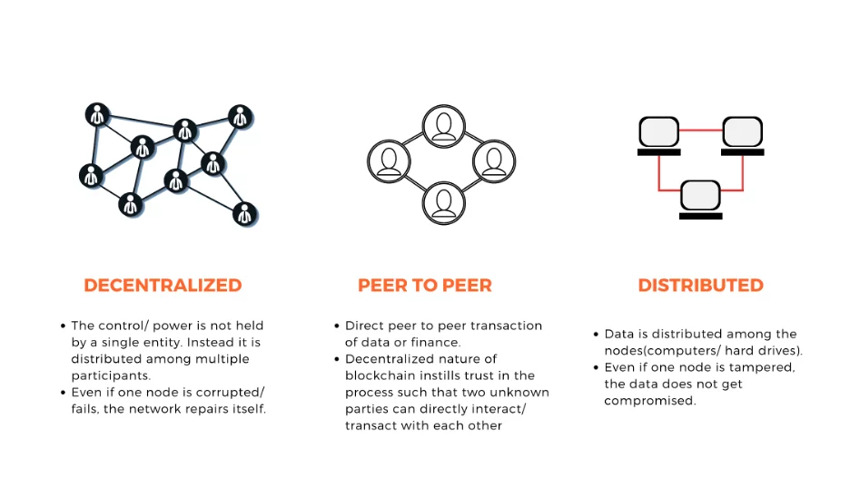
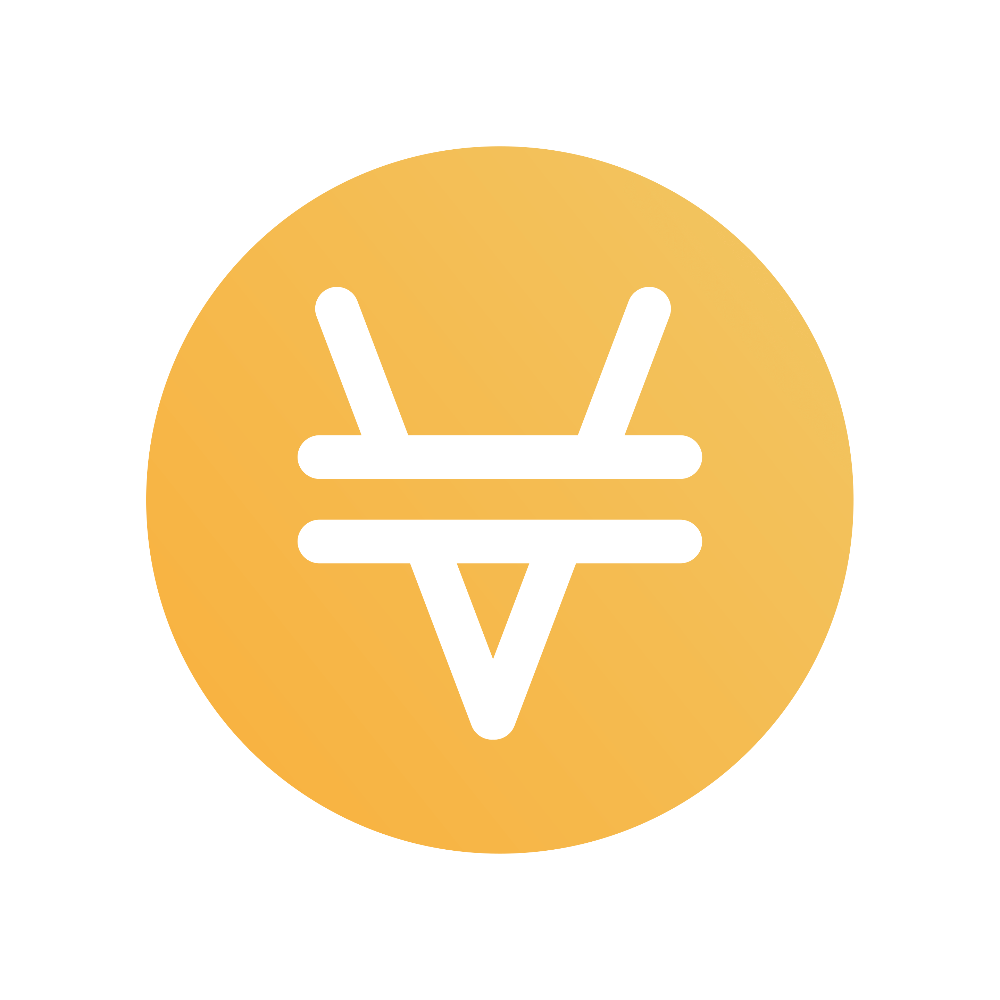

Veille Technologie - Blockchain & Cryptomonnaies
- 
-
Qu'est ce que c'est que la Blockchain ?
- La Blockchain, fruit de nombreux fantasmes il s'agit d'une technologie de stockage et de transmission d'informations comme le fairait une base de donnée classique MySQL, MariaDB, PostgreSQL mais sans autorité centrale (décentralisée) sécurisée par un protocole de confidentialité par cryptographie (l'hash SHA-256 par exemple).
-

-
Qu'est ce que sont les cryptomonnaies ?
-


-
Les cryptomonnaies sont des monnaies virtuelle qui sont créées par des personnes indépendantes
et qui sont utilisées pour payer des services ou des produits sur le Web décentralisée qu'on appelle
Web3.
Elles peuvent avoir de nombreuses applications, comme dans le cas de l'épargne grâce à la DeFi (Finance décentralisée en français) ou bien pour la spéculation financière.
Les réseaux sur lequelles reposent les différentes cryptomonnaies sont assurés par les mineurs de cryptomonnaies, qui utilisent l'énergie éléctrique combiné à le puissance de calcul appelé hashrate pour miner de nouveaux blocs (à travers des pools de minage) ce qui permet alors de faire circuler les transactions sur le réseau donné.
Les cartes graphique haut de gamme (d'ancienne génération) étaient largement utilisées pour miner de nouveaux blocs combinés à des ASICs (machine de minage), cela explique en partie la pénurie de semi-conducteurs que nous vivons aujourd'hui. -
Exemple de plateformes DeFi :
Balancer Protocol
Curve Finance

Venus Protocol
-
En quoi les Cryptomonnaies peuvent t-elles révolutionner la manière dont on achète sur le Web et dans la vie réelle ?
- De nombreuses plateformes comme Binance avec sa Binance Card ou FTX avec sa FTX Card sont disponibles sur le Web à leur clientèle, elle propose de faire des transactions en convertissant des cryptos en FIAT (EUR, Yen, USD, Réal Brésilien) lors de la transaction mais d'autres pays comme El Salvador et la Centrafrique ont décidé d'accepter le Bitcoin comme monnaies officielles bien souvent pour pallier à l'inflation de leur monnaie locale, remplacer le dollar américain ou bien d'attirer les enthousiastes de la crypto à venir participer à leur économie grâce au tourisme et l'achat de biens & services sur leur territoire.
-
Liste des sources utilisées
-
- Blockchain — Wikipédia
- Qu'est-ce que la crypto-monnaie ou monnaie virtuelle ?
- Comprendre les blockchains : fonctionnement et enjeux de ces nouvelles technologies
- Balancer
- curve.fi
- Venus Protocol
- Carte Visa Binance
- Card FTX
- En Centrafrique, bitcoin et guerre d’influence
- El Salvador Just Became The First Country To Accept Bitcoin As Legal Tender